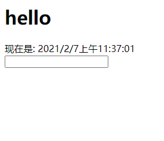
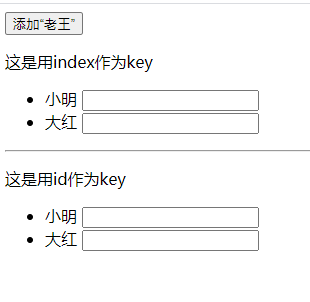

012-key的作用
1、经典的面试题
- 在vue/react中，key的作用?
- key的内部原理?
- 为什么循环遍历的时候，key最好不用index?
1.1 用index作key的例子
首先我们写个经典的例子，用户列表，点击按钮，往用户列表头新增一个客户
class App extends React.Component {
state = {
list: [
{id:'c101', name: '小明'},
{id:'c102', name: '大红'}
]
}
addWang = () => {
const newUser = {id:'c103', name:'老王'};
this.setState({
list: [newUser, ...this.state.list]
});
}
render () {
return (
<div>
<button onClick={this.addWang}>添加“老王”</button>
<ul>
{this.state.list.map((user, $index) => {
return <li key={$index}>{user.name}</li>
})}
</ul>
</div>
)
}
}
页面效果:

效果和我们想的一样，但是底层的性能完全不一样了。
底层原理:
根据diff算法我们知道，当点击按钮调用setState改变数据后，触发render，react就会生成一个新的vDOM，接着将 新vDOM的key 在 旧vDOM中对比，相同的key做比较，如果内容发生变化则更新。
慢动作回放:
根据前面的更新规则，我们来捋一捋上面例子的更新过程
在还没点击按钮之前的vDOM是下面的结构
js的数据: [ {name: '小明'} {name: '大红'} ] 数据对应的vDOM，这个为旧vDOM: <li key=0>小明</li> <li key=1>大红</li>点击按钮后，数据发生改变
js的数据: [ {name: '老王'} {name: '小明'} {name: '大红'} ] 数据对应的vDOM，这个为新vDOM: <li key=0>老王</li> <li key=1>小明</li> <li key=2>大红</li>diff开始对比
首先拿新vDOM的<li key=0>老王</li> 中key=0，那么去旧vDOM中找到key=0的数据，找到了<li key=0>小明</li>，对比内容不一样，于是更新真实DOM
接着拿新vDOM的<li key=1>小明</li> 中key=1，那么去旧vDOM中找到key=1的数据，找到了<li key=1>大红</li>，对比内容不一样，于是更新真实DOM
接着拿新vDOM的<li key=3>大红</li> 中key=3，那么去旧vDOM中找到key=3的数据，没有找到，于是更新真实DOM
这么算下来，一共有3次更新真实DOM的操作
1.2 用id作为key的例子
同样的场景，只是我们该用id作为key
<ul>
{this.state.list.map((user) => {
return <li key={user.id}>{user.name}</li>
})}
</ul>
这种的慢动作:
在还没点击按钮之前的vDOM是下面的结构
js的数据: [ {name: '小明'} {name: '大红'} ] 数据对应的vDOM，称为旧vDOM: <li key="c101">小明</li> <li key="c102">大红</li>点击按钮后，数据发生改变
js的数据: [ {name: '老王'} {name: '小明'} {name: '大红'} ] 数据对应的vDOM，称为新vDOM: <li key="c103">老王</li> <li key="c101">小明</li> <li key="c102">大红</li>diff开始对比
首先拿新vDOM的<li key="c103">老王</li> 中key=c103，那么去旧vDOM中找到key=c103的数据，没有找到，于是更新真实DOM
接着拿新vDOM的<li key="c101">小明</li> 中key=c101，那么去旧vDOM中找到key=c101的数据，找到了<li key="c101">小明</li> 发现内容没有变化，直接复用，不更新真实DOM
接着拿新vDOM的<li key="c102">大红</li> 中key=c102，那么去旧vDOM中找到key=c102的数据，找到了<li key="c102">大红</li> 发现内容没有变化，直接复用，不更新真实DOM
这么算下来，一共有1次更新真实DOM的操作。性能提高了很多
1.3 加上个input，还是用index作为key
如果在<li>里面加个<input>，那么index作为key就会出问题了。
还是前面的例子，改下jsx加个<input>
<div>
<button onClick={this.addWang}>添加“老王”</button>
<p>这是用index作为key</p>
<ul>
{this.state.list.map((user, $index) => {
return <li key={$index}>{user.name} <input type="text"/></li>
})}
</ul>
<hr />
<p>这是用id作为key</p>
<ul>
{this.state.list.map((user, $index) => {
return <li key={user.id}>{user.name} <input type="text"/></li>
})}
</ul>
</div>
在点击按钮之前，我们输入点内容，然后再点击添加，如果是key=$index的，会出现输入的内容错位了

还是用前面的知识解答
用key=$index的是这么场景
在还没点击按钮之前的vDOM是下面的结构
js的数据: [ {name: '小明'} {name: '大红'} ] 数据对应的vDOM: <li key="0">小明 <input type="text"></li> <li key="1">大红 <input type="text"></li>点击按钮后，数据发生改变
js的数据: [ {name: '老王'} {name: '小明'} {name: '大红'} ] 数据对应的vDOM: <li key="0">老王 <input type="text"></li> <li key="1">小明 <input type="text"></li> <li key="2">大红 <input type="text"></li>diff开始对比
首先拿新vDOM的<li key="0">老王 <input type="text"></li>，那么去旧vDOM中找到key=0的数据，找到了<li key="0">小明 <input type="text"></li>，对比内容不一样，于是更新真实DOM。然对比里面的<input>发现<input>没有变化则不会更新<input>，所以这个<input>还保留着我们输入的内容
其他依次类推
2、总结
2.1 虚拟DOM中key的作用
1). 简单的说: key是虚拟DOM对象的标识, 在更新显示时key起着极其重要的作用。
2). 详细的说: 当状态中的数据发生变化时，react会根据【新数据】生成【新的虚拟DOM】, 随后React进行【新虚拟DOM】与【旧虚拟DOM】的diff比较，比较规则如下：
- 旧虚拟DOM中找到了与新虚拟DOM相同的key：若虚拟DOM中内容没变, 直接使用之前的真实DOM。若虚拟DOM中内容变了, 则生成新的真实DOM，随后替换掉页面中之前的真实DOM
- 旧虚拟DOM中未找到与新虚拟DOM相同的key，根据数据创建新的真实DOM，随后渲染到到页面
2.2 用index作为key可能会引发的问题
- 若对数据进行：逆序添加、逆序删除等破坏顺序操作: 会产生没有必要的真实DOM更新 ==> 界面效果没问题, 但效率低。
- 如果结构中还包含输入类的DOM：会产生错误DOM更新 ==> 界面有问题。
- 注意如果不存在对数据的逆序添加、逆序删除等破坏顺序操作，仅用于渲染列表用于展示，使用index作为key是没有问题的。
2.3 开发中如何选择key
- 最好使用每条数据的唯一标识作为key, 比如id、手机号、身份证号、学号等唯一值。
- 如果确定只是简单的展示数据，用index也是可以的。